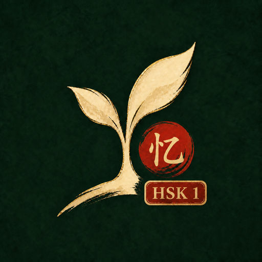

Hanzi Garden
Сад иероглифов · write Hanzi to clear the weeds, on Android.
Hanzi Garden
Android wrapper (API 34+) for the Hanzi Garden web game. The React build is bundled offline inside the APK—no network required after install.
Download Hanzi Garden APK
Hanzi Garden HSK 1
Дополнительная демо-версия: 220 грядок, по одному иероглифу на каждой. Включает 174 уникальных знака HSK 1 (2.0) и первые 46 новых знаков HSK 2 (2.0).
Download HSK 1 APKUpdating: install the new APK over the existing app. If Android blocks the install, uninstall once and reinstall—only needed when the signing key changed from an older build.